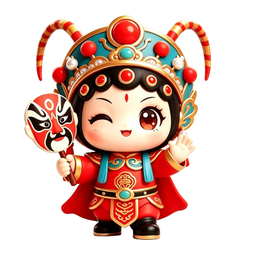

我是川小旦 🎭
问我川剧的任何问题 —— 变脸、脸谱、行当、剧目,我都知道!

👆 点我看绝活!
你好
💡 试试这些问题:
使用说明
本页接入 Kimi AI(Moonshot API)。请在 ai-chat.html 中找到 KIMI_CONFIG.apiKey,替换为你的真实密钥(格式 sk-...)。未配置时自动回退到本地知识库 FAQ 匹配。
⚠ 前端直接暴露 API Key 有安全风险,仅适用于本地演示。生产环境请通过后端代理转发请求。